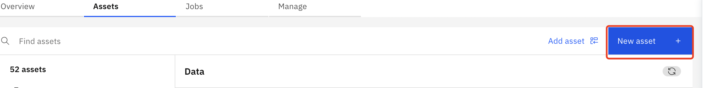
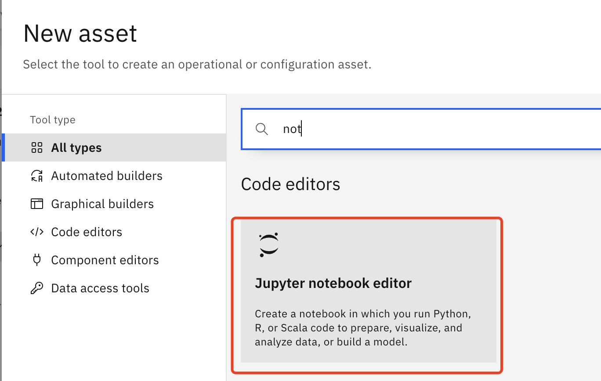
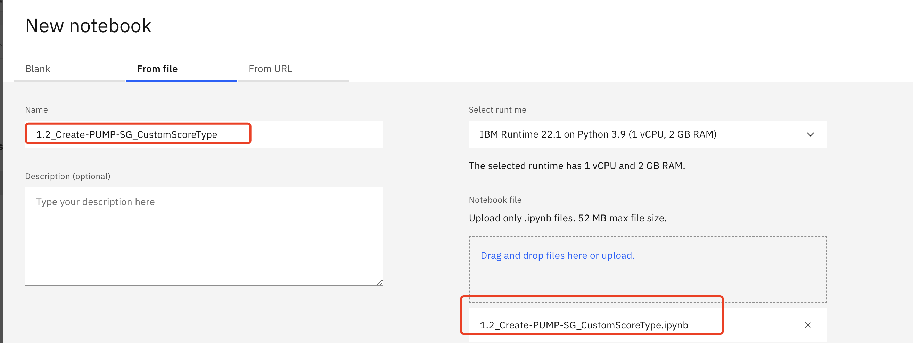
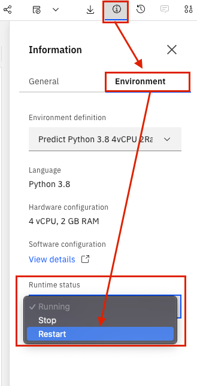
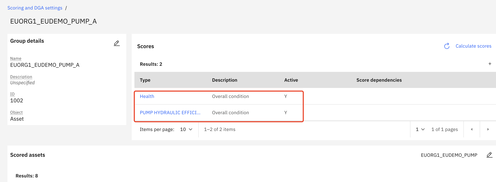
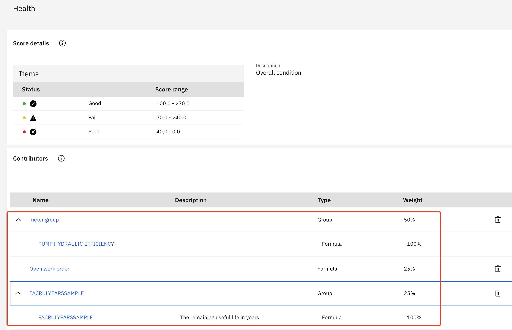
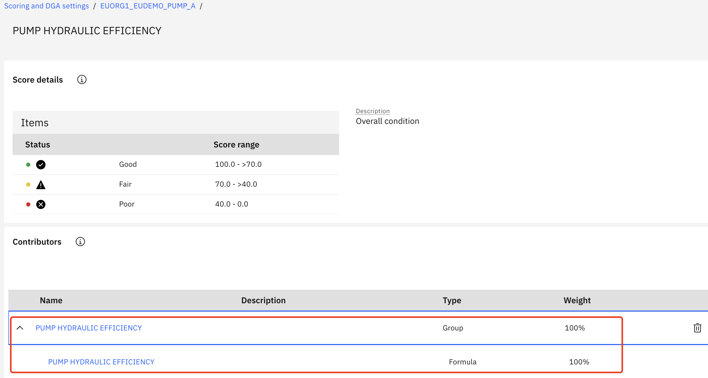
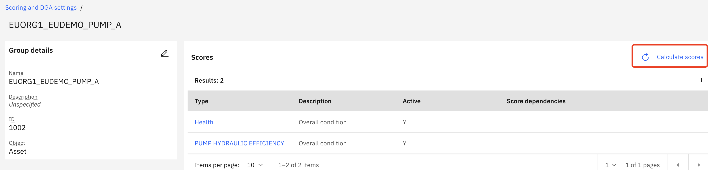
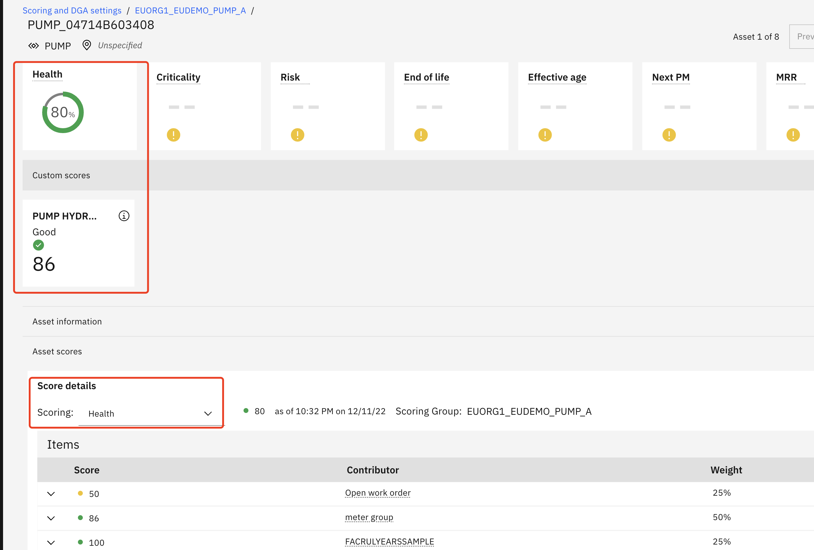

Create Custom Score Using a Notebook
This notebook will create a health scoring group and the associated health, and custom score - PUMP HYDRAULIC EFFICIENCY. These instructions will be based off using the '1.2_Create-PUMP-SG_CustomScoreType.ipynb' file with the Pump demo data which included in hpu_csv_demo data set at https://github.ibm.com/Watson-IoT/eam-hpu-lab/csv-files.
In this exercise you will use Watson Studio, MAS Health and Predict Utilities to:
- Upload the and Run the HPU Health Score Group notebook to create custom score and score group in Maximo Health.
- Confirm Scoring groups have been created and scores have been calculated
- Handle Errors that may come up in the process
!!! note****
You must complete the previous exercise for [Setup Watson Studio](setup_watson_studio.md) before you start this exercise.
This notebook can only be run once per environment per site with the same set of assets.
Pre-requisites
- Ensure you have access to asset data files for the Health and Predict Utilities Demo Data
- Ensure you have loaded the hpu_csv_demo data into the Health and Predict Utilities system.
- Complete the Load Data into Manage lab for the Utilities data, ensure you have loaded the hpu_csv_demo data into the Health and Predict Utilities system.
Note
It is best to perform this lab in your own Watson Studio Project created using Setup Watson Studio instructions. If you are using a shared project, ensure you append each file uploaded with your initials and update the file paths in the notebooks to include that change.
Upload files and run the Data Loader Notebook
-
Upload the Creat PUMP Score Groups' notebook from the github in the
https://github.ibm.com/Watson-IoT/eam-hpu-lab/notebooksto your project.
Click 'New asset' button in the project, and filter for notebook type.

-
Select the
1.2_Create-PUMP-SG_CustomScoreType.ipynbnotebook, and then click Create button.  -
Click on the
pencilicon next to your notebook to open it in edit mode. -
If the notebook fails to start, restart it. Click on the
iicon ,Environmenttab,Running statusdropdown select box and chooseRestart
-
Run the first code cell to import packages
-
Fetch MX_BASE_URL and MX_APIKEY as instructued below and store it as HPU_Envs.json file in below format, then upload to ws project(If it's already prepared, skip this step).
{ "Instruction":{ "MX_BASE_URL":"Extract health or manage host, and replace ******* in https://*******/maximo/, e.g Get main.manage.ivt13rel88.ivt.suite.maximo.com from https://main.manage.ivt13rel88.ivt.suite.maximo.com/maximo/oslc/graphite/relengineer/index.html", "MX_APIKEY":"Application Administration -> Search and enter the API Keys application-> Copy key from admin user card (e.g. 6805t46gn3tef37pu0picpg9vcq3hsmamm1enc43), or Add API key if not exist." }, "MX_APIKEY":"********************", "MX_BASE_URL":"http://health-team31.fyre.ibm.com:9084/maximo/" } -
Update the site id value to your
SITE_IDand the prefix value to your org idORG_IDin the second cell -
Run the next cell to define the API call for Maximo
-
Run the next cell to define function for creating the following:
a. Create a new custom score type
b. The query that will be used to build the health scores
c. Get the scores list and activate the scores
d. Create the internal group, add scores and contributors for the asset group and clean up
-
Run the next cell to create the query for the Asset Scoring Group. This query will be made up of Asset Type and Site ID
-
Run the next cell to create
PUMP HYDRAULIC EFFICIENCYscore type, ignore the error if it's already there. -
Run the next two cells to create factors and add some work order data for the later calculation
-
Clean up and then create the Asset Scoring Group using the query from the previous cell, Build the scores with formulas, and activate the scores, and trigger the calculation.
Confirm Proper Score Group Created
The following steps will confirm that the score group was created properly
-
Navigate to
Maximo Health and Predict for Utilitiesfor the provided environment -
Go to the
Scoring and DGA Settingsapplication within Maximo H&PU -
Search for your Org or Site and notice that there are one score group created for Pump Assets.
 4. Click into the Score Groups and notice all the score types created via the the notebook listed in the
4. Click into the Score Groups and notice all the score types created via the the notebook listed in the Group Detailssection, click any score to check the score details. 
 -
Back to Score group detail, click
Calculate Scoresand allow the scores to calculate. 6. Click into any asset and see that the scores have calculated 
Congratulations you have seen how to use this notebook to create new custom score and used it in a score group. You have also gained experience using Jupyter Notebooks in Watson Studio!
In the next exercises you will learn not only how to directly create these on UI , but also how to use the new score type in other pages.